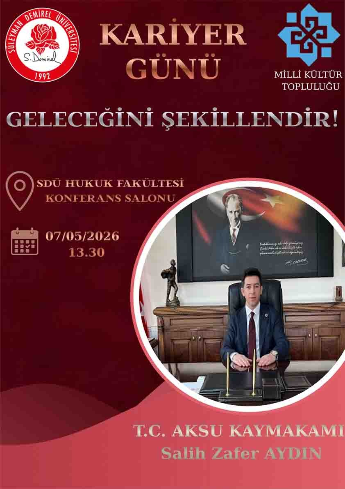

Kariyer Günleri 2026

Tarih:
12 Ekim 2026, 14:00
Yer:
A Blok Konferans Salonu
Kontenjan:
120 kişi
Açıklama:
Öğrencilerin kariyer gelişimine katkı sağlamak amacıyla
düzenlenen Kariyer Günleri etkinliği.